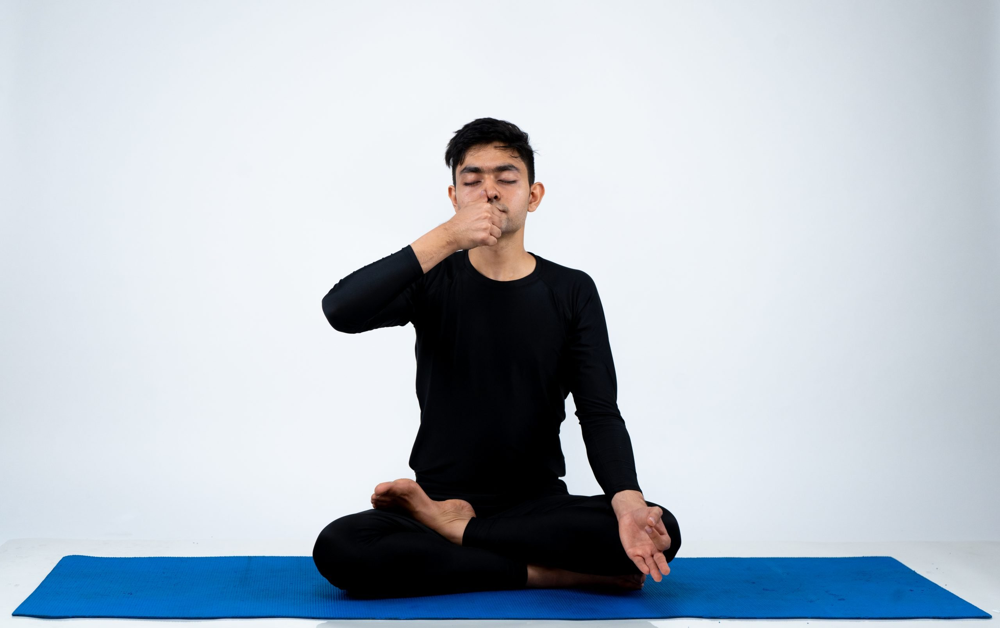

Alternate Nostril Breathing

This type of breathing is known as "nadi shodana pranayama" in Sanskrit. This is a breathing technique that is widely used
in yoga, but can also be used simply for relaxation. This form of breathing is very intuitive, and as the name suggests,
it involves alternating breathing between nostrils. It is also very controlled breathing that calms the brain and the
body by lowering the heart rate/blood pressure, making it an excellent stress reliever. This type of breathing can calm
you down in the moment and reduce stress levels over time too.
-
Lift your hand to your nose, and place your thumb on one nostril and your index finger on the other in a position as if to
pinch the nose
-
Exhale all of your air out, and then close your right nostril shut with the finger that is on it
-
Inhale slowly through your left nostril until you cannot inhale any more air, and then close your left nostril.
-
At this point, both nostrils should be closed, so hold this position for around 15 seconds.
-
Open up your right nostril by releasing the finger that is on it, and slowly exhale all of your air
-
Inhale slowly through your right nostril until you cannot inhale any more air, and then close your right nostril.
-
At this point, both nostrils should be closed, so hold this position for around 15 seconds.
-
Open up your left nostril by releasing the finger that is on it, and slowly exhale all of your air
-
Repeat steps 3-8 for however long you want. Doing at least 5 repetitions of this is reccomended for best results